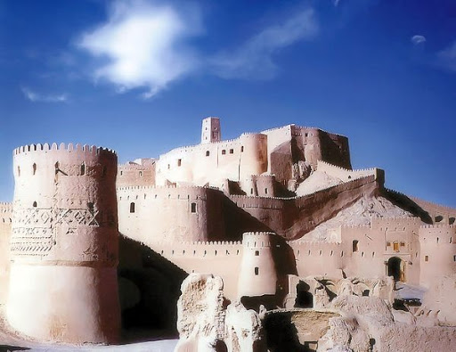
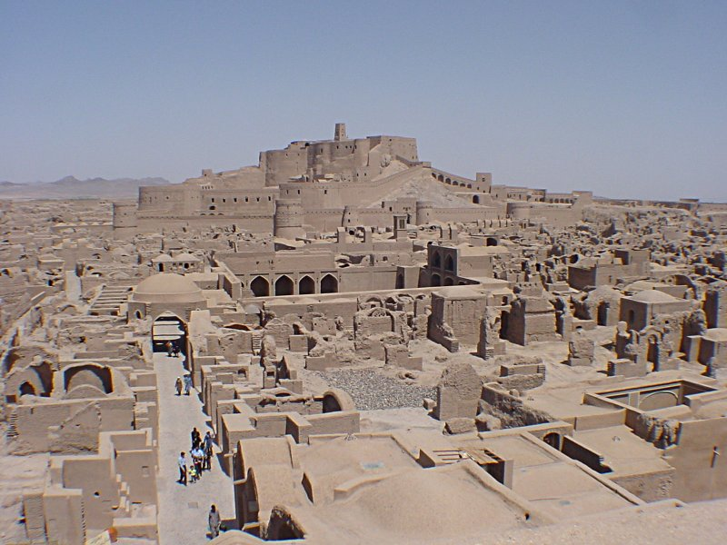

Arg-ı Bem Kalesi, İran’ın Bem kentinde konumlanmış tarihi bir kale niteliğindedir. Kerpiç yapıda tasarlanmış olan bu kale aynı zamanda ipek yolu üzerinde yer almakta olup tarihi Ahameniş İmparatorluğuna dek uzanmaktadır. Ayrıca Arg-ı Bem Kalesi, Lut Çölü’nin güneybatı istikametinde yer almaktadır.
Arg-ı Bem Kalesi, Parthian döneminde yani M.Ö 247-M.S 224 yılları arasında inşa edilmiştir. Kısa süre içerisinde bulunduğu bölgenin önemli merkezi haline gelmiş 6 km2 den oluşan bir alanda inşa edilmiş olan bu kalenin geçmişinin 12. yüzyıla dayandığı bilinmektedir.
Arg-ı Bam Kalesi’nin ekonomisi tüm zamanlarda turizme ve tarıma dayanıklı yapıda olmuştur.Bem ve çevre bölgesinde en fazla yetişen tarım ürünü hurma olmuştur. Hurmanın yanı sıra bu bölgelerde kuraklığa ihtiyaç duyulan pamuk ve narenciye de yetiştirilmektedir.
Ayrıca Bem bölgesi sınırları içerisinde yer almakta olan Bender Abbas limanı üzerinden bu tarım ürünleri dış ülkelere ihraç edilmektedir.
Arg-ı Bem Kalesi, İran tarihinde tarihi ve kültürel açıdan her zaman için dikkat çekmiş önemli bir yere sahip olmuştur. Parthian döneminde kurulmuş olabileceği düşünülen bu kale Pers İmparatorluğu esnasında şehrin önemli bir merkezi haline getirilmiştir.
Perslerin kurmuş olduğu bu bölge zamanla genişlemiş, gelişmiş ve çöl ortasında yapılanmış olmasına rağmen çeşitli sulama kanalları aracılığıyla tam olarak bir tarım merkezi haline getirilmiştir.
Arg-ı Bem Kalesi, 2000 yıllık bir geçmişe sahip İran’ın kültürel ve tarihi mirası olarak kabul görmüştür. Bu yapı dünyada kerpiçten inşa edilmiş olan en büyük yapıdır.
Arg-ı Bem Kalesi, kireç, tuğla, saman ve palmiye dallarının karışımı şeklinde birleştirilerek inşa edilmiştir. Arg-ı Bem Kalesi’nin mimari yapısında Selçuklu, Moğol ve Afgan dönemlerinin etkileri görülmüştür. Ve bu ölçülerde bina inşa ettirilmiştir.
Arg-ı Bem Kalesi birçok kez yıkıcı etkilere maruz kalmış ve bölgenin büyük bir kısmı yanmış yıkılmıştır. Fakat günümüze kadar bir kısım kalıntılar ulaşabilmiştir. Bu kalıntıların bir kısmının 12. yüzyılda diğer kısmının ise Safevi döneminde 16-18. yüzyıllara ait kalıntılar olduğu saptanmıştır.
Deprem sonrası yapının bir kısmı onarılabilmiş ve bu onarılan kısımlar restore edilerek günümüzde Hamam, sinegog, kapalı çarşı ve ev olarak kullanılmıştır.

